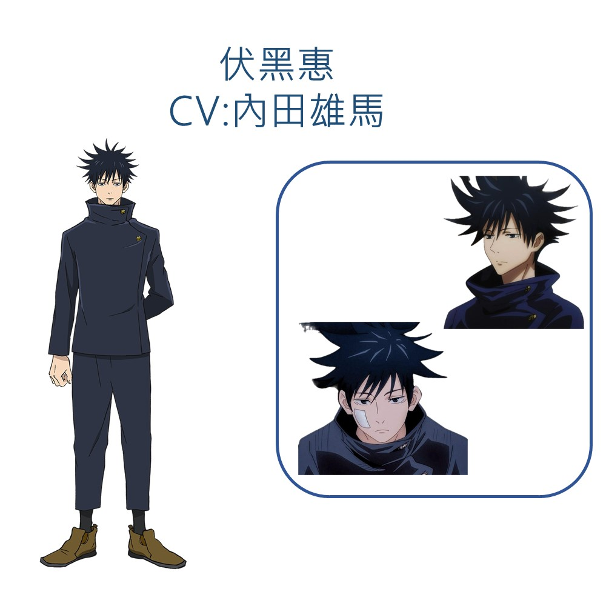
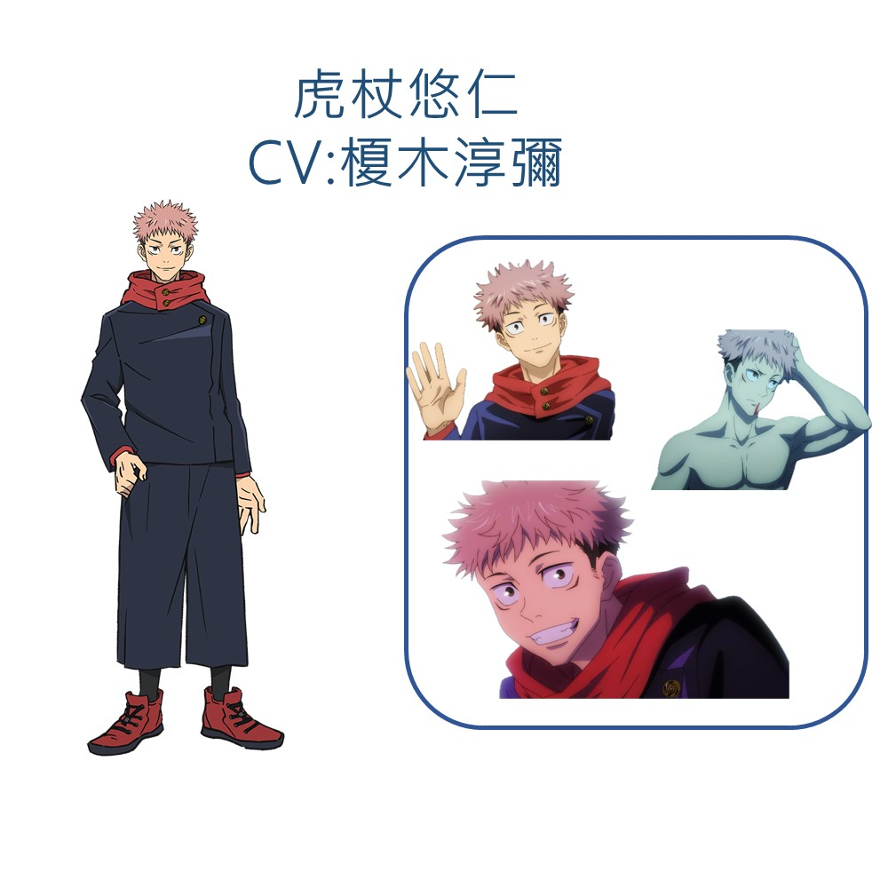
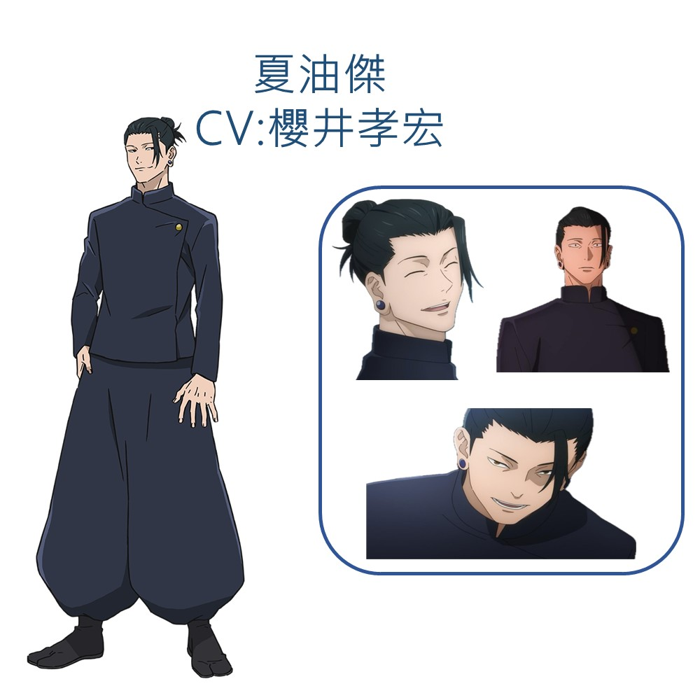
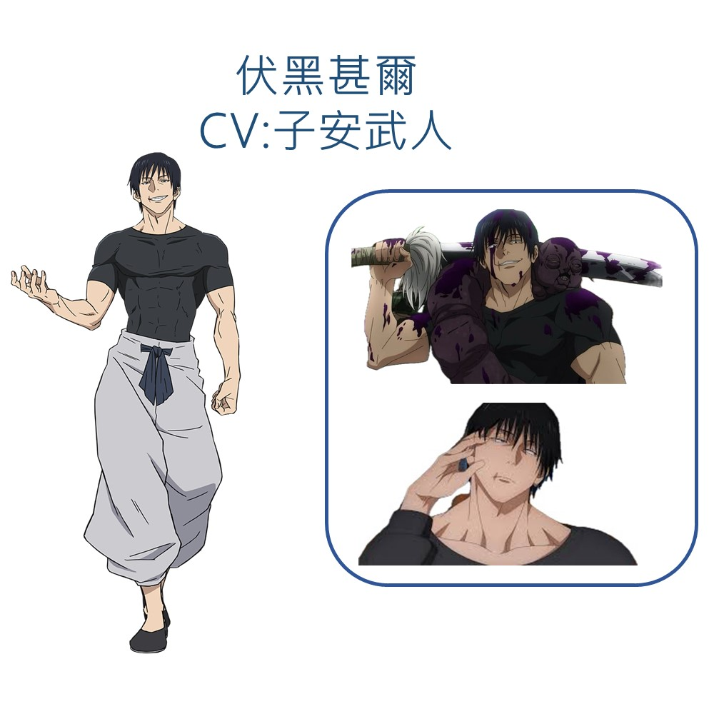
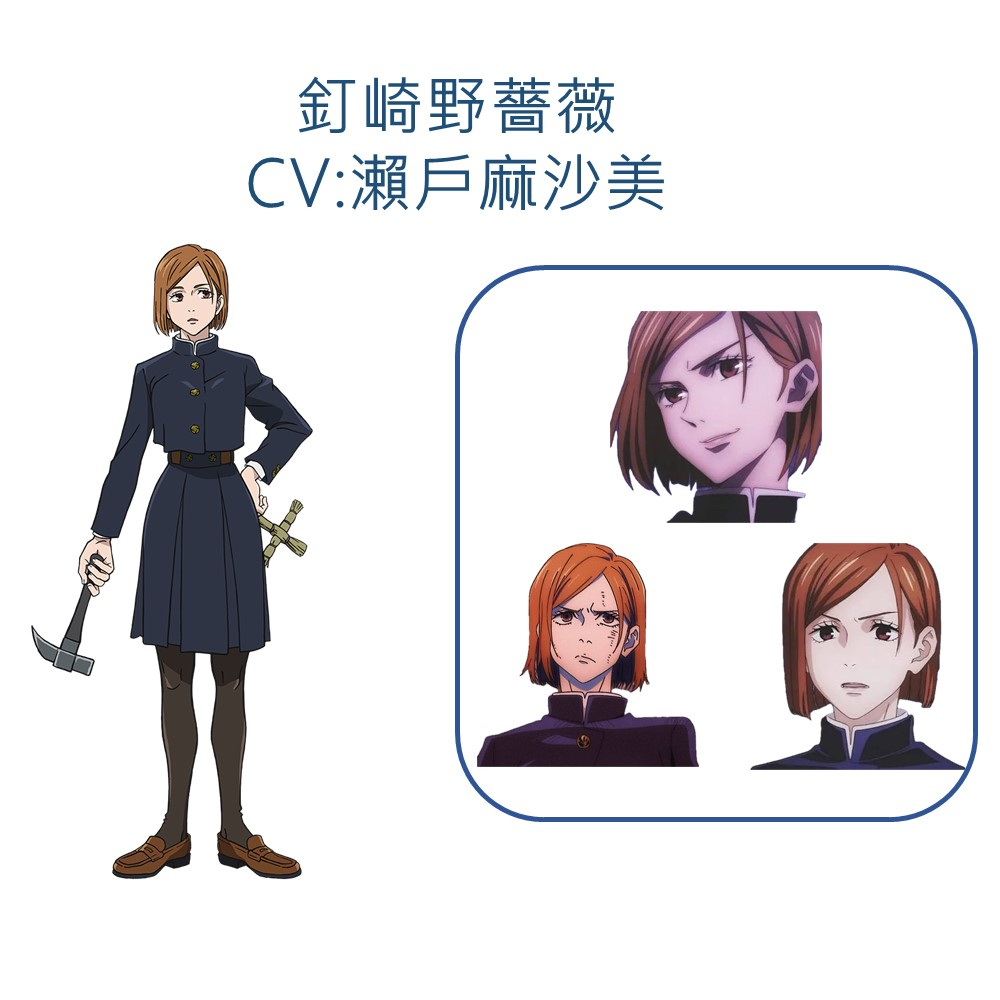
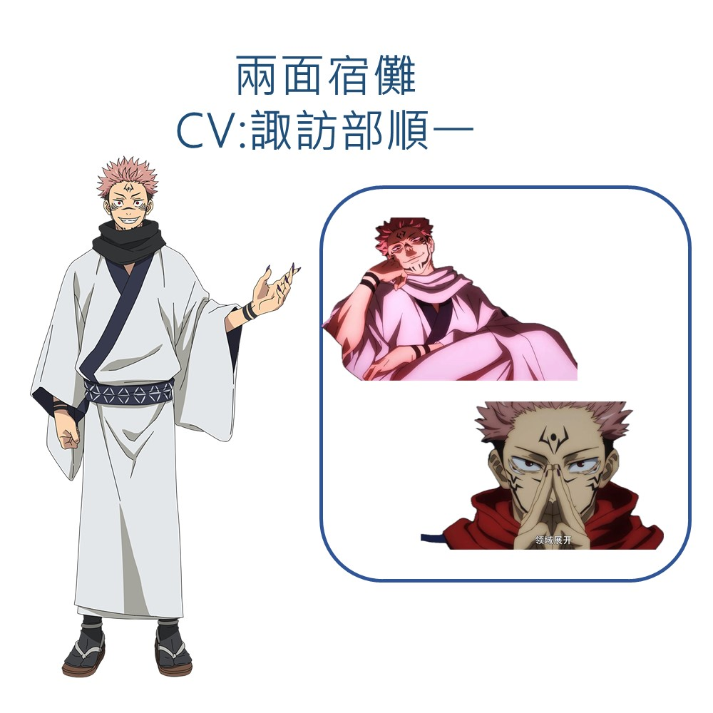

|
自己和所有人都承認的「最強」咒術師。是個什麼都會的人，認為現在的咒術界十分守舊腐敗，所以就什麼都不做，本人稱之「培養新人」，來改變咒術界的風氣，並十分重視自己的學生。因為力量太強，為了不傷及無辜者而採取會造成最低傷害的程度，但也有著這些冷酷或能平靜對待的一面。 |
 |
有禪院家血脈的天才少年。東京咒術高專一年級男學生，二級咒術師。相貌清秀，特徵是黑色的刺蝟頭。入學第一年就被冠以二級咒術師稱號的天才少年。性格冷靜沉著，行事亦相當謹慎，不論觀光或任務都會事先將資料收集完整。信念是為讓更多善人得到平等的救助，而不平等的去救人。 |
 |
本作主角。粉黑雙色頭髮為其特徵，性格樂天，有極強的運動神經，同時有超乎常人的身體能力。父母雙亡，撫養他成長的祖父也在故事開頭去世。在吞下兩面宿儺的手指後，成為宿儺的容器，並加入東京咒術高專。如果是為了拯救他人的生命會很樂意犧牲。發覺自己的弱小後渴望變強，積極向五條學習成為「最強」 |
 |
特級咒詛師。現時前身為僅有的四名特級咒術師之一，過去與五條同是咒術高專學生，兩人當時既是搭檔也是好兄弟。在術師之中是僅有的一名咒靈使，近戰能力極強無比，但除了五條悟以外沒什麼人知道。 |
 |
伏黑惠的父親，伏黑津美紀的繼父。原禪院家出身，天生沒有咒力，被家族厭惡，入贅伏黑家後改姓伏黑。 「天與咒縛」的影響使他毫無咒力，以徹底喪失咒力為代價，獲得了遠超凡人的肉體，反而具備對詛咒的抗性，五官的感知能力敏銳，因為咒縛強化得太徹底，使他的眼睛超好，肚子也超結實。 |
 |
東京咒術高專一年級女學生，三級咒術師。個性爽朗，但很毒舌，會在見到的第一眼審視他人，常出現下意識將對第一印象不好的男性醜化的醜男濾鏡，目前已知僅有五條悟能夠倖免。雖然不愉快的時候會做出粗暴的舉動，但也有著溫柔且善良的一面。由於嚮往東京生活且極之討厭鄉村生活而獨自前來就讀高專。 |
 |
故事開始寄宿於虎杖體內的特級咒物，被稱作「詛咒之王」，擁有四隻手、兩張臉的虛構鬼神，實際存在的人，在咒術的全盛時代時，咒術師集結總戰力向他挑戰卻失敗，後來冠上『兩面宿儺』的名字。性格殘忍冷酷，身上帶著奇特刺青紋路，於死滅洄游泳者「天使」處得知，宿儺具有別名「墮天」。 |
資料來源:
https://zh.wikipedia.org/wiki/%E5%92%92%E8%A1%93%E8%BF%B4%E6%88%B0